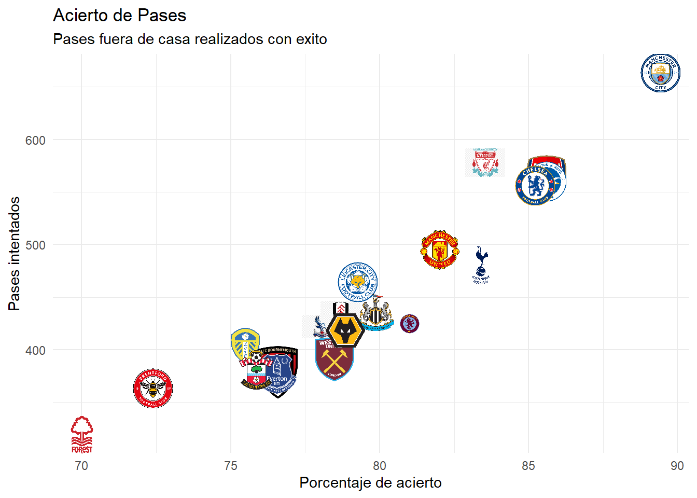

En la asignatura “Programación y manejo de datos en la era del Big Data”, debíamos crear dos trabajos distintos: Uno por equipos y uno individual con el objetivo de terminar de entender el temario y mostrar nuestro conocimiento.
Una vez entregado el trabajo grupal, tocaba hacer el individual. Al igual que en el trabajo grupal, el tema era completamente libre por lo que he elegido la Premier League ya que es una liga que me gusta y como he visto ya trabajos sobre la Liga BBVA, cambiar un poco.
DATOS
Esta vez con los datos, lo he tenido mas facil que en el trabajo grupal. Gracias a la charla que nos dio un antiguo alumno de Pedro y a la experiencia en el trabajo anterior, pude entender que en los trabajos tanto de universidad como del mundo laboral, el tener unos buenos datos y trabajarlos no debería ser un problema ya que si lo haces bien te ayuda a la hora de realizar graficos.
Es por eso que para sacar los datos, busque en distintas bases sobre datos de esta liga, pero al final decidi coger 4 en concreto donde se mostraba todo lo que necesitaba para la elaboración de los trabajos.
Código
library(tidyverse)library(ggplot2)library(plotly)library(dplyr)library(gt)library(gtExtras)library(tidyr)library(ggthemes)library(ggplot2)library(ggimage)library(ggrepel)library(plyr)library(ggrepel)library(conflicted)library(lubridate)library(gtsummary)library(kableExtra)library(zoo)conflict_prefer("filter","dplyr")conflict_prefer("mutate","dplyr")conflict_prefer("rename","dplyr")conflict_prefer("arrange","dplyr")conflict_prefer("summarise","dplyr")conflict_prefer("summarize","dplyr")conflict_prefer("count", "dplyr")# CARGAMOS LOS DATOS QUE POSTERIORMENTE TRANSFORMAREMOS PARA PODER ANALIZARLOS MEJORdf <-read.csv("datos/away.csv")df1 <-read.csv("datos/home.csv")df2 <-read.csv("datos/E0.csv")df3 <-read.csv("datos/matchday.csv")clasificacion <-read.csv("datos/ni_idea.csv")
CLASIFICACIÓN
Para empezar con el analisis, empezamos con una tabla de como quedaron los equipos durante la tempora 22/23. Podemos ver como el campeón de la liga fue el Manchester City con 89 puntos, a la Champions League se clasificaron tanto el Manchester City, como el Arsenal, Manchester United y el Newcastle. Por otra parte, descendieron a la Championship(segunda liga inglesa) Leicester, Leeds y Southampton.
Clasificación 2022-2023
Posicion
logo
equipo
puntos
1
Manchester City
89
2
Arsenal
84
3
Manchester United
75
4
Newcastle
71
5
Liverpool
67
6
Brighton
62
7
Aston Villa
61
8
Tottenham
60
9
Brentford
59
10
Fulham
52
11
Crystal Palace
45
12
Chelsea
44
13
Wolves
41
14
West Ham
40
15
Bournemouth
39
16
Nottingham Forest
38
17
Everton
36
18
Leicester
34
19
Leeds
31
20
Southampton
25
Manchester City Levantando La Copa
RESULTADOS
Una vez hemos visto la clasificación, vamos a ver como fueron los resultados de los partidos. En concreto vamos a ver los partidos de casa, es decir, un gráfico donde veamos el porcentaje de empates, victorias y derrotas que tienen los 380 partidos jugados en casa de toda la temporada.
Como podemos observar, el 48,42% de los partidos que se jugaron en casa terminaron en victoria para el local, el 28,68% terminaron en derrota y el 22,89% fueron empate.
PASES
Como aficionado al futbol, una gráfica con la cual he estado entretenido haciendola y analizandola ha sido ver la media de pases que cada equipo ha realizado tanto como local como de visitante.
Para analizarlos, he creado dos nubes de puntos, uno para visitantes y otro para local. En ellos en el eje de coordenadas se encuentra el porcentaje de pases realizados con exito y en el eje de abscisas.
EN CASA
Código
pases <- df1 %>%select(Home.team.name, Total.passes, Passes.. )%>%arrange(Home.team.name) %>%rename( Equipo = Home.team.name)pases$Passes.. <-as.numeric(sub("%", "", pases$Passes..))pases <- pases %>%mutate(total_pases =rollapply(Total.passes, width =19, FUN = sum, by =19, align ="right", fill =NA), Porcentaje_Acierto =rollapply(Passes.., width =19, FUN = sum, by =19, align ="right", fill =NA)) pases <-na.omit(pases)pases <- pases %>%mutate( acierto_partido = Porcentaje_Acierto/19, pases_partido = total_pases/19, acierto_partido =round(acierto_partido, 2), pases_partido =round(pases_partido, 2) ) %>%select(Equipo, acierto_partido, pases_partido)df_logos <-data.frame(lenguaje =c("Manchester City", "Arsenal", "Manchester United", "Newcastle", "Liverpool", "Brighton", "Aston Villa", "Tottenham", "Brentford", "Fulham", "Crystal Palace", "Chelsea","Wolves", "West Ham", "Bournemouth", "Nottingham Forest", "Everton", "Leicester", "Leeds", "Southampton"), logo =c("https://upload.wikimedia.org/wikipedia/en/thumb/e/eb/Manchester_City_FC_badge.svg/1200px-Manchester_City_FC_badge.svg.png", "https://upload.wikimedia.org/wikipedia/en/thumb/5/53/Arsenal_FC.svg/1200px-Arsenal_FC.svg.png", "https://upload.wikimedia.org/wikipedia/en/thumb/7/7a/Manchester_United_FC_crest.svg/1200px-Manchester_United_FC_crest.svg.png", "https://upload.wikimedia.org/wikipedia/hif/2/25/Newcastle_United_Logo.png", "https://banner2.cleanpng.com/20180805/ivh/kisspng-liverpool-f-c-%E2%80%93manchester-united-f-c-rivalry-pr-melhores-times-do-mundo-by-haster-playbuzz-5b676ac86ab8c9.6288931915335042004372.jpg", "https://upload.wikimedia.org/wikipedia/fr/thumb/8/8c/Logo_Brighton_Hove_Albion_2011.svg/1200px-Logo_Brighton_Hove_Albion_2011.svg.png", "https://1000logos.net/wp-content/uploads/2022/05/Aston-Villa-Logo.png", "https://assets.stickpng.com/images/580b57fcd9996e24bc43c4ee.png", "https://upload.wikimedia.org/wikipedia/en/thumb/2/2a/Brentford_FC_crest.svg/1200px-Brentford_FC_crest.svg.png", "https://banner2.cleanpng.com/20180526/el/kisspng-fulham-f-c-craven-cottage-reading-f-c-201718-5b09d4c217ce74.1498095015273709460975.jpg", "https://banner2.cleanpng.com/20171201/786/crystal-palace-f-c-logo-picture-5a21a8f94a18b2.6423648715121553853035.jpg", "https://assets.stickpng.com/images/580b57fcd9996e24bc43c4e1.png", "https://upload.wikimedia.org/wikipedia/sco/thumb/f/fc/Wolverhampton_Wanderers.svg/1200px-Wolverhampton_Wanderers.svg.png", "https://upload.wikimedia.org/wikipedia/sco/thumb/c/c2/West_Ham_United_FC_logo.svg/1845px-West_Ham_United_FC_logo.svg.png", "https://upload.wikimedia.org/wikipedia/hif/5/53/AFC_Bournemouth_%282013%29.png", "https://cdn.freebiesupply.com/logos/large/2x/nottingham-forest-fc-logo-png-transparent.png", "https://assets.stickpng.com/images/580b57fcd9996e24bc43c4e3.png", "https://assets.stickpng.com/thumbs/580b57fcd9996e24bc43c4e8.png", "https://cdn.freebiesupply.com/logos/large/2x/leeds-united-afc-3-logo-png-transparent.png", "https://assets.stickpng.com/thumbs/580b57fcd9996e24bc43c4ea.png"))pases <-left_join(pases, df_logos, by =c(Equipo ="lenguaje"))prueba <-ggplot(pases, aes(x = acierto_partido, y = pases_partido)) +geom_image(aes(image = logo), size =0.1) +labs(title ="Acierto de Pases",subtitle ="Pases fuera de casa realizados con exito",x ="Porcentaje de acierto",y ="Pases intentados") +theme_minimal() +theme(legend.title =element_blank()) +theme(legend.position ="none")print(prueba)

FUERA DE CASA
Código
pases_fuera <- df %>%select(away.team.name, Total.passes, Passes.. )%>%arrange(away.team.name) %>%rename( Equipo = away.team.name)pases_fuera$Passes.. <-as.numeric(sub("%", "", pases_fuera$Passes..))pases_fuera <- pases_fuera %>%mutate(total_pases =rollapply(Total.passes, width =19, FUN = sum, by =19, align ="right", fill =NA), Porcentaje_Acierto =rollapply(Passes.., width =19, FUN = sum, by =19, align ="right", fill =NA)) pases_fuera <-na.omit(pases_fuera)pases_fuera <- pases_fuera %>%mutate( acierto_partido = Porcentaje_Acierto/19, pases_partido = total_pases/19, acierto_partido =round(acierto_partido, 2), pases_partido =round(pases_partido, 2) ) %>%select(Equipo, acierto_partido, pases_partido)df_logos <-data.frame(lenguaje =c("Manchester City", "Arsenal", "Manchester United", "Newcastle", "Liverpool", "Brighton", "Aston Villa", "Tottenham", "Brentford", "Fulham", "Crystal Palace", "Chelsea","Wolves", "West Ham", "Bournemouth", "Nottingham Forest", "Everton", "Leicester", "Leeds", "Southampton"), logo =c("https://upload.wikimedia.org/wikipedia/en/thumb/e/eb/Manchester_City_FC_badge.svg/1200px-Manchester_City_FC_badge.svg.png", "https://upload.wikimedia.org/wikipedia/en/thumb/5/53/Arsenal_FC.svg/1200px-Arsenal_FC.svg.png", "https://upload.wikimedia.org/wikipedia/en/thumb/7/7a/Manchester_United_FC_crest.svg/1200px-Manchester_United_FC_crest.svg.png", "https://upload.wikimedia.org/wikipedia/hif/2/25/Newcastle_United_Logo.png", "https://banner2.cleanpng.com/20180805/ivh/kisspng-liverpool-f-c-%E2%80%93manchester-united-f-c-rivalry-pr-melhores-times-do-mundo-by-haster-playbuzz-5b676ac86ab8c9.6288931915335042004372.jpg", "https://upload.wikimedia.org/wikipedia/fr/thumb/8/8c/Logo_Brighton_Hove_Albion_2011.svg/1200px-Logo_Brighton_Hove_Albion_2011.svg.png", "https://1000logos.net/wp-content/uploads/2022/05/Aston-Villa-Logo.png", "https://assets.stickpng.com/images/580b57fcd9996e24bc43c4ee.png", "https://upload.wikimedia.org/wikipedia/en/thumb/2/2a/Brentford_FC_crest.svg/1200px-Brentford_FC_crest.svg.png", "https://banner2.cleanpng.com/20180526/el/kisspng-fulham-f-c-craven-cottage-reading-f-c-201718-5b09d4c217ce74.1498095015273709460975.jpg", "https://banner2.cleanpng.com/20171201/786/crystal-palace-f-c-logo-picture-5a21a8f94a18b2.6423648715121553853035.jpg", "https://assets.stickpng.com/images/580b57fcd9996e24bc43c4e1.png", "https://upload.wikimedia.org/wikipedia/sco/thumb/f/fc/Wolverhampton_Wanderers.svg/1200px-Wolverhampton_Wanderers.svg.png", "https://upload.wikimedia.org/wikipedia/sco/thumb/c/c2/West_Ham_United_FC_logo.svg/1845px-West_Ham_United_FC_logo.svg.png", "https://upload.wikimedia.org/wikipedia/hif/5/53/AFC_Bournemouth_%282013%29.png", "https://cdn.freebiesupply.com/logos/large/2x/nottingham-forest-fc-logo-png-transparent.png", "https://assets.stickpng.com/images/580b57fcd9996e24bc43c4e3.png", "https://assets.stickpng.com/thumbs/580b57fcd9996e24bc43c4e8.png", "https://cdn.freebiesupply.com/logos/large/2x/leeds-united-afc-3-logo-png-transparent.png", "https://assets.stickpng.com/thumbs/580b57fcd9996e24bc43c4ea.png"))pases_fuera <-left_join(pases_fuera, df_logos, by =c(Equipo ="lenguaje"))prueba1 <-ggplot(pases_fuera, aes(x = acierto_partido, y = pases_partido)) +geom_image(aes(image = logo), size =0.1) +labs(title ="Acierto de Pases",subtitle ="Pases con exito realizados fuera de casa",x ="Porcentaje de acierto",y ="Pases intentados") +theme_minimal() +theme(legend.title =element_blank()) +theme(legend.position ="none")print(prueba1)
Si vemos las dos grafias, podemos ver como en siguen una linea de regresión por asi decirlo. Tenemos que el Notthingham Forest el cual quedo al borde del descenso, fue el equipo que menos pases intento tanto en casa como fuera y el equipo que menor porcentaje de acierto tiene en ambos lados.
En la parte contraria tenemos al campeón de la liga, el Manchester City. Es el equipo con mayor precisión y con mas intentos de pase realizados.
Si vemos con atención, conforme mas alto quedes en liga, mas arriba estas en la supuesta recta de regresión, por lo que podemos suponer que a mejor equipo mas facilidad en los pases.(Tampoco es que hayamos encontrado America con este estudio)
GOLES POR PARTIDO
Ahora pasamos a un punto importante que es el mundo de los goles.
En este gráfico tenemos la media de goles que ha tenido cada jornada a lo largo del año.
Vemos como la media se situa alrededor de los 2 goles, despuntando la jornada 34 y con menos goles en la jornada 11 y 12.
FALTAS
En este últim punto y ya el último, vamos a ver las faltas.
EQUIPOS CON MAS FALTAS
Código
prueba_casa <- df1 %>%select(Home.team.name, Fouls, Yellow.Cards)%>%arrange(Home.team.name) %>%rename( Equipo = Home.team.name, Amarillas = Yellow.Cards)%>%mutate(Amarillas =ifelse(is.na(Amarillas), 0, Amarillas))prueba_casa <- prueba_casa %>%mutate(Faltas =rollapply(Fouls, width =19, FUN = sum, by =19, align ="right", fill =NA)) %>%mutate(Amarillas =rollapply(Amarillas, width =19, FUN = sum, by =19, align ="right", fill =NA)) %>%select(Equipo, Faltas, Amarillas)prueba_casa <-na.omit(prueba_casa)prueba_fuera <- df %>%select(away.team.name, Fouls, Yellow.Cards)%>%arrange(away.team.name) %>%rename( Equipo = away.team.name, Amarillas = Yellow.Cards) %>%mutate(Amarillas =ifelse(is.na(Amarillas), 0, Amarillas))prueba_fuera <- prueba_fuera %>%mutate(Faltas =rollapply(Fouls, width =19, FUN = sum, by =19, align ="right", fill =NA)) %>%mutate(Amarillas =rollapply(Amarillas, width =19, FUN = sum, by =19, align ="right", fill =NA)) %>%select(Equipo, Faltas, Amarillas)prueba_fuera <-na.omit(prueba_fuera)faltas <-full_join( prueba_casa, prueba_fuera)faltas <- faltas %>%group_by( Equipo) %>%summarise(Faltas =sum(Faltas), Amarillas =sum(Amarillas)) %>%ungroup()primera_tabla <- faltas %>%arrange(desc(Faltas)) %>%slice(c(1:4)) primera_tabla <- primera_tabla %>%kable() %>%kable_styling(bootstrap_options =c("striped", "hover", "condensed", "responsive"),font_size =14, full_width =FALSE) primera_tabla
Equipo
Faltas
Amarillas
Leeds
467
89
Wolves
463
85
Crystal Palace
446
83
Nottingham Forest
445
84
En la primera tabla vemos los equipos que mas faltas tiene. En la tabla he puesto tanto las faltas como las amarillas, ya que al hacer la tabla vi que la correlación entre ellas era muy alta. Cuantas mas faltas hagas, mas amarillas tienes, por lo que correlación es bastante elevada.
EQUIPOS CON MENOS FALTAS
Código
prueba_casa <- df1 %>%select(Home.team.name, Fouls, Yellow.Cards)%>%arrange(Home.team.name) %>%rename( Equipo = Home.team.name, Amarillas = Yellow.Cards)%>%mutate(Amarillas =ifelse(is.na(Amarillas), 0, Amarillas))prueba_casa <- prueba_casa %>%mutate(Faltas =rollapply(Fouls, width =19, FUN = sum, by =19, align ="right", fill =NA)) %>%mutate(Amarillas =rollapply(Amarillas, width =19, FUN = sum, by =19, align ="right", fill =NA)) %>%select(Equipo, Faltas, Amarillas)prueba_casa <-na.omit(prueba_casa)prueba_fuera <- df %>%select(away.team.name, Fouls, Yellow.Cards)%>%arrange(away.team.name) %>%rename( Equipo = away.team.name, Amarillas = Yellow.Cards) %>%mutate(Amarillas =ifelse(is.na(Amarillas), 0, Amarillas))prueba_fuera <- prueba_fuera %>%mutate(Faltas =rollapply(Fouls, width =19, FUN = sum, by =19, align ="right", fill =NA)) %>%mutate(Amarillas =rollapply(Amarillas, width =19, FUN = sum, by =19, align ="right", fill =NA)) %>%select(Equipo, Faltas, Amarillas)prueba_fuera <-na.omit(prueba_fuera)faltas <-full_join( prueba_casa, prueba_fuera)faltas <- faltas %>%group_by( Equipo) %>%summarise(Faltas =sum(Faltas), Amarillas =sum(Amarillas)) %>%ungroup()segunda_tabla <- faltas %>%arrange(desc(Faltas)) %>%slice(c(17:20)) segunda_tabla <- segunda_tabla %>%kable() %>%kable_styling(bootstrap_options =c("stylesheet", "hover", "condensed", "responsive"),font_size =14, full_width =FALSE) segunda_tabla
Equipo
Faltas
Amarillas
Arsenal
373
51
West Ham
362
44
Brentford
354
57
Manchester City
347
44
En esta última tenemos los 4 equipos que menos faltas han realizado con sus correspondientes tarjetas amarillas. Vemos como el Brentford que es el tercer equipo con menos faltas es el equipo con mas tarjetas de los 4, teniendo bastante diferencia entre con los otros. Por lo tanto, al igual que antes deciamos que cuantas mas faltas mas tarjetas, aquí podemos decir que no es siempre así.
Información sobre la sesión
Abajo muestro mi entorno de trabajo y paquetes utilizados
---title: "PREMIER LEAGUE 2022-2023"description: | Vamos a ver las estadisticas de la temporada pasadaauthor: - name: Ángel Martínez Albert affiliation: Universitat de València affiliation-url: https://www.uv.esdate: 2024-01-23 categories: [trabajo BigData, furbol, Premier League] image: "./imagenes/Premier_League.png"title-block-banner: true title-block-banner-color: "#FFFAFA" toc: truetoc-location: lefttoc-depth: 3smooth-scroll: trueformat: html: backgroundcolor: "#FFFAFA" #embed-resources: true link-external-newwindow: true #css: ./assets/my_css_file.css #- CUIDADO!!!!code-tools: truecode-link: true---## INTRODUCCIÓN Y DATOS### INTRODUCCIÓNEn la asignatura "Programación y manejo de datos en la era del Big Data", debíamos crear dos trabajos distintos: Uno por equipos y uno individual con el objetivo de terminar de entender el temario y mostrar nuestro conocimiento.Una vez entregado el trabajo grupal, tocaba hacer el individual. Al igual que en el trabajo grupal, el tema era completamente libre por lo que he elegido la Premier League ya que es una liga que me gusta y como he visto ya trabajos sobre la Liga BBVA, cambiar un poco.### DATOSEsta vez con los datos, lo he tenido mas facil que en el trabajo grupal. Gracias a la charla que nos dio un antiguo alumno de Pedro y a la experiencia en el trabajo anterior, pude entender que en los trabajos tanto de universidad como del mundo laboral, el tener unos buenos datos y trabajarlos no debería ser un problema ya que si lo haces bien te ayuda a la hora de realizar graficos.Es por eso que para sacar los datos, busque en distintas bases sobre datos de esta liga, pero al final decidi coger 4 en concreto donde se mostraba todo lo que necesitaba para la elaboración de los trabajos.```{r}library(tidyverse)library(ggplot2)library(plotly)library(dplyr)library(gt)library(gtExtras)library(tidyr)library(ggthemes)library(ggplot2)library(ggimage)library(ggrepel)library(plyr)library(ggrepel)library(conflicted)library(lubridate)library(gtsummary)library(kableExtra)library(zoo)conflict_prefer("filter","dplyr")conflict_prefer("mutate","dplyr")conflict_prefer("rename","dplyr")conflict_prefer("arrange","dplyr")conflict_prefer("summarise","dplyr")conflict_prefer("summarize","dplyr")conflict_prefer("count", "dplyr")# CARGAMOS LOS DATOS QUE POSTERIORMENTE TRANSFORMAREMOS PARA PODER ANALIZARLOS MEJORdf <-read.csv("datos/away.csv")df1 <-read.csv("datos/home.csv")df2 <-read.csv("datos/E0.csv")df3 <-read.csv("datos/matchday.csv")clasificacion <-read.csv("datos/ni_idea.csv")```---## CLASIFICACIÓNPara empezar con el analisis, empezamos con una tabla de como quedaron los equipos durante la tempora 22/23. Podemos ver como el campeón de la liga fue el Manchester City con 89 puntos, a la Champions League se clasificaron tanto el Manchester City, como el Arsenal, Manchester United y el Newcastle. Por otra parte, descendieron a la Championship(segunda liga inglesa) Leicester, Leeds y Southampton.```{r}#| echo: falsetabla <- clasificacion %>%select(rank, team.name, points)df_logos <-data.frame(lenguaje =c("Manchester City", "Arsenal", "Manchester United", "Newcastle", "Liverpool", "Brighton", "Aston Villa", "Tottenham", "Brentford", "Fulham", "Crystal Palace", "Chelsea","Wolves", "West Ham", "Bournemouth", "Nottingham Forest", "Everton", "Leicester", "Leeds", "Southampton"), logo =c("https://upload.wikimedia.org/wikipedia/en/thumb/e/eb/Manchester_City_FC_badge.svg/1200px-Manchester_City_FC_badge.svg.png", "https://upload.wikimedia.org/wikipedia/en/thumb/5/53/Arsenal_FC.svg/1200px-Arsenal_FC.svg.png", "https://upload.wikimedia.org/wikipedia/en/thumb/7/7a/Manchester_United_FC_crest.svg/1200px-Manchester_United_FC_crest.svg.png", "https://upload.wikimedia.org/wikipedia/hif/2/25/Newcastle_United_Logo.png", "https://banner2.cleanpng.com/20180805/ivh/kisspng-liverpool-f-c-%E2%80%93manchester-united-f-c-rivalry-pr-melhores-times-do-mundo-by-haster-playbuzz-5b676ac86ab8c9.6288931915335042004372.jpg", "https://upload.wikimedia.org/wikipedia/fr/thumb/8/8c/Logo_Brighton_Hove_Albion_2011.svg/1200px-Logo_Brighton_Hove_Albion_2011.svg.png", "https://1000logos.net/wp-content/uploads/2022/05/Aston-Villa-Logo.png", "https://assets.stickpng.com/images/580b57fcd9996e24bc43c4ee.png", "https://upload.wikimedia.org/wikipedia/en/thumb/2/2a/Brentford_FC_crest.svg/1200px-Brentford_FC_crest.svg.png", "https://banner2.cleanpng.com/20180526/el/kisspng-fulham-f-c-craven-cottage-reading-f-c-201718-5b09d4c217ce74.1498095015273709460975.jpg", "https://banner2.cleanpng.com/20171201/786/crystal-palace-f-c-logo-picture-5a21a8f94a18b2.6423648715121553853035.jpg", "https://assets.stickpng.com/images/580b57fcd9996e24bc43c4e1.png", "https://upload.wikimedia.org/wikipedia/sco/thumb/f/fc/Wolverhampton_Wanderers.svg/1200px-Wolverhampton_Wanderers.svg.png", "https://upload.wikimedia.org/wikipedia/sco/thumb/c/c2/West_Ham_United_FC_logo.svg/1845px-West_Ham_United_FC_logo.svg.png", "https://upload.wikimedia.org/wikipedia/hif/5/53/AFC_Bournemouth_%282013%29.png", "https://cdn.freebiesupply.com/logos/large/2x/nottingham-forest-fc-logo-png-transparent.png", "https://logodetimes.com/wp-content/uploads/everton-football-club.png", "https://2.bp.blogspot.com/-Y-2jWNjLcfU/WVLq0rkC59I/AAAAAAABJ-c/-om4_ykR8lslo5F7wb8R_1QLmq1agC-qACLcBGAs/s1600/Leicester%2BCity%2BFC.png", "https://cdn.freebiesupply.com/logos/large/2x/leeds-united-afc-3-logo-png-transparent.png", "https://1.bp.blogspot.com/-P6Ga_qFT7qI/WVLtKqfVnWI/AAAAAAABJ_c/mMSvpmngHYYoFHs-9JcnDUpuh6jhL0IjwCLcBGAs/s1600/Southampton%2BFC.png"))df_final <-left_join(tabla, df_logos, by =c(`team.name`="lenguaje"))df_final1 <-df_final %>%rename (Posicion = rank, equipo = team.name, puntos = points) %>%select ( Posicion, logo, equipo, puntos)clasificación_tabla <-gt(df_final1) %>%gt_img_rows(columns ="logo", img_source ='web') %>%tab_header(title ="Clasificación 2022-2023") %>%gt_theme_538()clasificación_tabla``````{r}#| echo: falsemy_url <-"https://www.mancity.com/meta/media/o4rnxini/ip4_2384.png?width=976"```---## RESULTADOSUna vez hemos visto la clasificación, vamos a ver como fueron los resultados de los partidos. En concreto vamos a ver los partidos de casa, es decir, un gráfico donde veamos el porcentaje de empates, victorias y derrotas que tienen los 380 partidos jugados en casa de toda la temporada.```{r}circular <- df3 %>%separate(fixture.date, c("fecha", "hora"), sep =10) %>%rename(resultado_casa = teams.home.winner, resultado_fuera = teams.away.winner)%>%mutate(resultado_casa =case_when( resultado_casa =="False"~"Derrota", resultado_casa =="True"~"Victoria", resultado_casa ==""~"Empate" ))circular <- circular %>%select(fecha, resultado_casa) %>%count(resultado_casa) %>%rename( suma = n)circular <- circular %>%mutate(Porcentaje = (suma)*100/380) %>%mutate(Porcentaje_2decimales =round(Porcentaje, 2),csum =rev(cumsum(rev(Porcentaje_2decimales))),posicion = Porcentaje_2decimales/2+lead(csum, 1))%>%mutate(posicion =ifelse(is.na(posicion), Porcentaje_2decimales/2, posicion))circular_definitivo <-ggplot(circular, aes(x ="" , y = Porcentaje , fill =fct_inorder(resultado_casa))) +geom_col(width =1, color =2) +coord_polar(theta ="y") +scale_fill_brewer(palette ="Paired") +ggtitle("Partidos de casa")+labs(subtitle ="Porcentaje del total de partidos de casa") +geom_label_repel(data = circular,aes(y = posicion, label =paste0(Porcentaje_2decimales, "%")),size =4, nudge_x =0.8, show.legend =FALSE) +guides(fill =guide_legend(title ="Resultados")) +theme_void() +theme(plot.title =element_text(face ="bold", size =18))circular_definitivo```Como podemos observar, el 48,42% de los partidos que se jugaron en casa terminaron en victoria para el local, el 28,68% terminaron en derrota y el 22,89% fueron empate.## PASESComo aficionado al futbol, una gráfica con la cual he estado entretenido haciendola y analizandola ha sido ver la media de pases que cada equipo ha realizado tanto como local como de visitante.Para analizarlos, he creado dos nubes de puntos, uno para visitantes y otro para local. En ellos en el eje de coordenadas se encuentra el porcentaje de pases realizados con exito y en el eje de abscisas.# EN CASA```{r}pases <- df1 %>%select(Home.team.name, Total.passes, Passes.. )%>%arrange(Home.team.name) %>%rename( Equipo = Home.team.name)pases$Passes.. <-as.numeric(sub("%", "", pases$Passes..))pases <- pases %>%mutate(total_pases =rollapply(Total.passes, width =19, FUN = sum, by =19, align ="right", fill =NA), Porcentaje_Acierto =rollapply(Passes.., width =19, FUN = sum, by =19, align ="right", fill =NA)) pases <-na.omit(pases)pases <- pases %>%mutate( acierto_partido = Porcentaje_Acierto/19, pases_partido = total_pases/19, acierto_partido =round(acierto_partido, 2), pases_partido =round(pases_partido, 2) ) %>%select(Equipo, acierto_partido, pases_partido)df_logos <-data.frame(lenguaje =c("Manchester City", "Arsenal", "Manchester United", "Newcastle", "Liverpool", "Brighton", "Aston Villa", "Tottenham", "Brentford", "Fulham", "Crystal Palace", "Chelsea","Wolves", "West Ham", "Bournemouth", "Nottingham Forest", "Everton", "Leicester", "Leeds", "Southampton"), logo =c("https://upload.wikimedia.org/wikipedia/en/thumb/e/eb/Manchester_City_FC_badge.svg/1200px-Manchester_City_FC_badge.svg.png", "https://upload.wikimedia.org/wikipedia/en/thumb/5/53/Arsenal_FC.svg/1200px-Arsenal_FC.svg.png", "https://upload.wikimedia.org/wikipedia/en/thumb/7/7a/Manchester_United_FC_crest.svg/1200px-Manchester_United_FC_crest.svg.png", "https://upload.wikimedia.org/wikipedia/hif/2/25/Newcastle_United_Logo.png", "https://banner2.cleanpng.com/20180805/ivh/kisspng-liverpool-f-c-%E2%80%93manchester-united-f-c-rivalry-pr-melhores-times-do-mundo-by-haster-playbuzz-5b676ac86ab8c9.6288931915335042004372.jpg", "https://upload.wikimedia.org/wikipedia/fr/thumb/8/8c/Logo_Brighton_Hove_Albion_2011.svg/1200px-Logo_Brighton_Hove_Albion_2011.svg.png", "https://1000logos.net/wp-content/uploads/2022/05/Aston-Villa-Logo.png", "https://assets.stickpng.com/images/580b57fcd9996e24bc43c4ee.png", "https://upload.wikimedia.org/wikipedia/en/thumb/2/2a/Brentford_FC_crest.svg/1200px-Brentford_FC_crest.svg.png", "https://banner2.cleanpng.com/20180526/el/kisspng-fulham-f-c-craven-cottage-reading-f-c-201718-5b09d4c217ce74.1498095015273709460975.jpg", "https://banner2.cleanpng.com/20171201/786/crystal-palace-f-c-logo-picture-5a21a8f94a18b2.6423648715121553853035.jpg", "https://assets.stickpng.com/images/580b57fcd9996e24bc43c4e1.png", "https://upload.wikimedia.org/wikipedia/sco/thumb/f/fc/Wolverhampton_Wanderers.svg/1200px-Wolverhampton_Wanderers.svg.png", "https://upload.wikimedia.org/wikipedia/sco/thumb/c/c2/West_Ham_United_FC_logo.svg/1845px-West_Ham_United_FC_logo.svg.png", "https://upload.wikimedia.org/wikipedia/hif/5/53/AFC_Bournemouth_%282013%29.png", "https://cdn.freebiesupply.com/logos/large/2x/nottingham-forest-fc-logo-png-transparent.png", "https://assets.stickpng.com/images/580b57fcd9996e24bc43c4e3.png", "https://assets.stickpng.com/thumbs/580b57fcd9996e24bc43c4e8.png", "https://cdn.freebiesupply.com/logos/large/2x/leeds-united-afc-3-logo-png-transparent.png", "https://assets.stickpng.com/thumbs/580b57fcd9996e24bc43c4ea.png"))pases <-left_join(pases, df_logos, by =c(Equipo ="lenguaje"))prueba <-ggplot(pases, aes(x = acierto_partido, y = pases_partido)) +geom_image(aes(image = logo), size =0.1) +labs(title ="Acierto de Pases",subtitle ="Pases fuera de casa realizados con exito",x ="Porcentaje de acierto",y ="Pases intentados") +theme_minimal() +theme(legend.title =element_blank()) +theme(legend.position ="none")print(prueba)```# FUERA DE CASA```{r}pases_fuera <- df %>%select(away.team.name, Total.passes, Passes.. )%>%arrange(away.team.name) %>%rename( Equipo = away.team.name)pases_fuera$Passes.. <-as.numeric(sub("%", "", pases_fuera$Passes..))pases_fuera <- pases_fuera %>%mutate(total_pases =rollapply(Total.passes, width =19, FUN = sum, by =19, align ="right", fill =NA), Porcentaje_Acierto =rollapply(Passes.., width =19, FUN = sum, by =19, align ="right", fill =NA)) pases_fuera <-na.omit(pases_fuera)pases_fuera <- pases_fuera %>%mutate( acierto_partido = Porcentaje_Acierto/19, pases_partido = total_pases/19, acierto_partido =round(acierto_partido, 2), pases_partido =round(pases_partido, 2) ) %>%select(Equipo, acierto_partido, pases_partido)df_logos <-data.frame(lenguaje =c("Manchester City", "Arsenal", "Manchester United", "Newcastle", "Liverpool", "Brighton", "Aston Villa", "Tottenham", "Brentford", "Fulham", "Crystal Palace", "Chelsea","Wolves", "West Ham", "Bournemouth", "Nottingham Forest", "Everton", "Leicester", "Leeds", "Southampton"), logo =c("https://upload.wikimedia.org/wikipedia/en/thumb/e/eb/Manchester_City_FC_badge.svg/1200px-Manchester_City_FC_badge.svg.png", "https://upload.wikimedia.org/wikipedia/en/thumb/5/53/Arsenal_FC.svg/1200px-Arsenal_FC.svg.png", "https://upload.wikimedia.org/wikipedia/en/thumb/7/7a/Manchester_United_FC_crest.svg/1200px-Manchester_United_FC_crest.svg.png", "https://upload.wikimedia.org/wikipedia/hif/2/25/Newcastle_United_Logo.png", "https://banner2.cleanpng.com/20180805/ivh/kisspng-liverpool-f-c-%E2%80%93manchester-united-f-c-rivalry-pr-melhores-times-do-mundo-by-haster-playbuzz-5b676ac86ab8c9.6288931915335042004372.jpg", "https://upload.wikimedia.org/wikipedia/fr/thumb/8/8c/Logo_Brighton_Hove_Albion_2011.svg/1200px-Logo_Brighton_Hove_Albion_2011.svg.png", "https://1000logos.net/wp-content/uploads/2022/05/Aston-Villa-Logo.png", "https://assets.stickpng.com/images/580b57fcd9996e24bc43c4ee.png", "https://upload.wikimedia.org/wikipedia/en/thumb/2/2a/Brentford_FC_crest.svg/1200px-Brentford_FC_crest.svg.png", "https://banner2.cleanpng.com/20180526/el/kisspng-fulham-f-c-craven-cottage-reading-f-c-201718-5b09d4c217ce74.1498095015273709460975.jpg", "https://banner2.cleanpng.com/20171201/786/crystal-palace-f-c-logo-picture-5a21a8f94a18b2.6423648715121553853035.jpg", "https://assets.stickpng.com/images/580b57fcd9996e24bc43c4e1.png", "https://upload.wikimedia.org/wikipedia/sco/thumb/f/fc/Wolverhampton_Wanderers.svg/1200px-Wolverhampton_Wanderers.svg.png", "https://upload.wikimedia.org/wikipedia/sco/thumb/c/c2/West_Ham_United_FC_logo.svg/1845px-West_Ham_United_FC_logo.svg.png", "https://upload.wikimedia.org/wikipedia/hif/5/53/AFC_Bournemouth_%282013%29.png", "https://cdn.freebiesupply.com/logos/large/2x/nottingham-forest-fc-logo-png-transparent.png", "https://assets.stickpng.com/images/580b57fcd9996e24bc43c4e3.png", "https://assets.stickpng.com/thumbs/580b57fcd9996e24bc43c4e8.png", "https://cdn.freebiesupply.com/logos/large/2x/leeds-united-afc-3-logo-png-transparent.png", "https://assets.stickpng.com/thumbs/580b57fcd9996e24bc43c4ea.png"))pases_fuera <-left_join(pases_fuera, df_logos, by =c(Equipo ="lenguaje"))prueba1 <-ggplot(pases_fuera, aes(x = acierto_partido, y = pases_partido)) +geom_image(aes(image = logo), size =0.1) +labs(title ="Acierto de Pases",subtitle ="Pases con exito realizados fuera de casa",x ="Porcentaje de acierto",y ="Pases intentados") +theme_minimal() +theme(legend.title =element_blank()) +theme(legend.position ="none")print(prueba1)```Si vemos las dos grafias, podemos ver como en siguen una linea de regresión por asi decirlo. Tenemos que el Notthingham Forest el cual quedo al borde del descenso, fue el equipo que menos pases intento tanto en casa como fuera y el equipo que menor porcentaje de acierto tiene en ambos lados. En la parte contraria tenemos al campeón de la liga, el Manchester City. Es el equipo con mayor precisión y con mas intentos de pase realizados. Si vemos con atención, conforme mas alto quedes en liga, mas arriba estas en la supuesta recta de regresión, por lo que podemos suponer que a mejor equipo mas facilidad en los pases.(Tampoco es que hayamos encontrado America con este estudio)---### GOLES POR PARTIDOAhora pasamos a un punto importante que es el mundo de los goles.```{r}df3 <-separate(df3, fixture.date, into =c( "fecha", "hora"), sep =10)prueba <- df3 %>%mutate( Total_goles_partido = goals.home + goals.away) %>%select( X, fecha, Total_goles_partido)prueba1 <- prueba %>%mutate(goles_jornada =rollapply(Total_goles_partido, width =10, FUN = sum, by =10, align ="right", fill =NA))jornadas <-na.omit(prueba1)jornadas$nueva_columna <-seq(1, 38)jornadas1 <- jornadas %>%mutate(media_partido = goles_jornada/10) %>%rename( Jornada = nueva_columna) %>%select ( Jornada, media_partido)p2 <-ggplot(data = jornadas1,aes(x = Jornada, y = media_partido)) +geom_col(fill ="#FF4040") +theme_minimal()+theme( panel.background =element_rect(fill ="lightblue")) +labs(title ="Media de goles por jornada", x ="Jornada", y ="Media Goles") +theme(axis.text.x =element_text(angle =90, vjust =0.5, hjust=1), plot.title =element_text(face ="bold", hjust =0.5), plot.caption =element_text(hjust =0.5))p2```En este gráfico tenemos la media de goles que ha tenido cada jornada a lo largo del año. Vemos como la media se situa alrededor de los 2 goles, despuntando la jornada 34 y con menos goles en la jornada 11 y 12. ---### FALTASEn este últim punto y ya el último, vamos a ver las faltas.# EQUIPOS CON MAS FALTAS ```{r}prueba_casa <- df1 %>%select(Home.team.name, Fouls, Yellow.Cards)%>%arrange(Home.team.name) %>%rename( Equipo = Home.team.name, Amarillas = Yellow.Cards)%>%mutate(Amarillas =ifelse(is.na(Amarillas), 0, Amarillas))prueba_casa <- prueba_casa %>%mutate(Faltas =rollapply(Fouls, width =19, FUN = sum, by =19, align ="right", fill =NA)) %>%mutate(Amarillas =rollapply(Amarillas, width =19, FUN = sum, by =19, align ="right", fill =NA)) %>%select(Equipo, Faltas, Amarillas)prueba_casa <-na.omit(prueba_casa)prueba_fuera <- df %>%select(away.team.name, Fouls, Yellow.Cards)%>%arrange(away.team.name) %>%rename( Equipo = away.team.name, Amarillas = Yellow.Cards) %>%mutate(Amarillas =ifelse(is.na(Amarillas), 0, Amarillas))prueba_fuera <- prueba_fuera %>%mutate(Faltas =rollapply(Fouls, width =19, FUN = sum, by =19, align ="right", fill =NA)) %>%mutate(Amarillas =rollapply(Amarillas, width =19, FUN = sum, by =19, align ="right", fill =NA)) %>%select(Equipo, Faltas, Amarillas)prueba_fuera <-na.omit(prueba_fuera)faltas <-full_join( prueba_casa, prueba_fuera)faltas <- faltas %>%group_by( Equipo) %>%summarise(Faltas =sum(Faltas), Amarillas =sum(Amarillas)) %>%ungroup()primera_tabla <- faltas %>%arrange(desc(Faltas)) %>%slice(c(1:4)) primera_tabla <- primera_tabla %>%kable() %>%kable_styling(bootstrap_options =c("striped", "hover", "condensed", "responsive"),font_size =14, full_width =FALSE) primera_tabla```En la primera tabla vemos los equipos que mas faltas tiene. En la tabla he puesto tanto las faltas como las amarillas, ya que al hacer la tabla vi que la correlación entre ellas era muy alta. Cuantas mas faltas hagas, mas amarillas tienes, por lo que correlación es bastante elevada.# EQUIPOS CON MENOS FALTAS ```{r}prueba_casa <- df1 %>%select(Home.team.name, Fouls, Yellow.Cards)%>%arrange(Home.team.name) %>%rename( Equipo = Home.team.name, Amarillas = Yellow.Cards)%>%mutate(Amarillas =ifelse(is.na(Amarillas), 0, Amarillas))prueba_casa <- prueba_casa %>%mutate(Faltas =rollapply(Fouls, width =19, FUN = sum, by =19, align ="right", fill =NA)) %>%mutate(Amarillas =rollapply(Amarillas, width =19, FUN = sum, by =19, align ="right", fill =NA)) %>%select(Equipo, Faltas, Amarillas)prueba_casa <-na.omit(prueba_casa)prueba_fuera <- df %>%select(away.team.name, Fouls, Yellow.Cards)%>%arrange(away.team.name) %>%rename( Equipo = away.team.name, Amarillas = Yellow.Cards) %>%mutate(Amarillas =ifelse(is.na(Amarillas), 0, Amarillas))prueba_fuera <- prueba_fuera %>%mutate(Faltas =rollapply(Fouls, width =19, FUN = sum, by =19, align ="right", fill =NA)) %>%mutate(Amarillas =rollapply(Amarillas, width =19, FUN = sum, by =19, align ="right", fill =NA)) %>%select(Equipo, Faltas, Amarillas)prueba_fuera <-na.omit(prueba_fuera)faltas <-full_join( prueba_casa, prueba_fuera)faltas <- faltas %>%group_by( Equipo) %>%summarise(Faltas =sum(Faltas), Amarillas =sum(Amarillas)) %>%ungroup()segunda_tabla <- faltas %>%arrange(desc(Faltas)) %>%slice(c(17:20)) segunda_tabla <- segunda_tabla %>%kable() %>%kable_styling(bootstrap_options =c("stylesheet", "hover", "condensed", "responsive"),font_size =14, full_width =FALSE) segunda_tabla```En esta última tenemos los 4 equipos que menos faltas han realizado con sus correspondientes tarjetas amarillas. Vemos como el Brentford que es el tercer equipo con menos faltas es el equipo con mas tarjetas de los 4, teniendo bastante diferencia entre con los otros. Por lo tanto, al igual que antes deciamos que cuantas mas faltas mas tarjetas, aquí podemos decir que no es siempre así.----------------------<br>### Información sobre la sesiónAbajo muestro mi entorno de trabajo y paquetes utilizados```{r}#| echo: falsesessioninfo::session_info() %>% details::details(summary ='current session info') ```